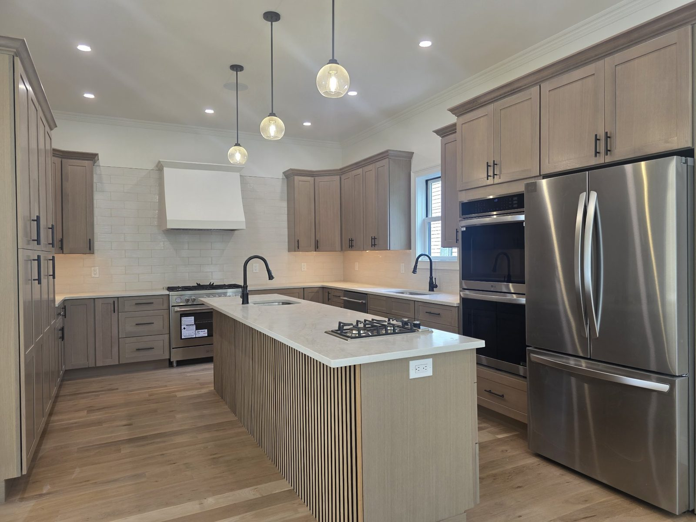

PSI Construction · Northeastern Pennsylvania
Where We Work in Northeastern Pennsylvania
We're based in Wilkes-Barre and do most of our work within about 25 miles. For new homes, additions and whole-house renovations, we travel further — up to about an hour.
Towns we work in
Close to home — every kind of job
Within about 25 miles of Kingston and Wilkes-Barre we take everything from a single bathroom or basement to a new house.
Luzerne County
Kingston, Wilkes-Barre, Forty Fort, Wyoming, West Pittston, Exeter, Swoyersville, Luzerne, Edwardsville, Plymouth, Nanticoke, Plains, Pittston, Hanover Township, Ashley, Dallas, Shavertown, Trucksville, Mountain Top
Lackawanna County
Scranton, Moosic, Old Forge, Taylor, Dunmore
Further out — larger projects, up to about an hour
New homes, additions, whole-house and gut renovations, and insurance rebuilds. We are running a water-damage insurance rebuild in Hawley right now.
Within about an hour
Hazleton, Bloomsburg, Berwick, Tunkhannock, Clarks Summit, Honesdale, Hawley, Lake Wallenpaupack, Hamlin, Stroudsburg, the Poconos
What we don't travel for: single bathrooms, small repairs and other short jobs more than about 25 miles out. The drive would cost you more than it's worth, and we would rather say so up front and point you to someone closer.
Do you work in Scranton?
Yes. Scranton and the nearby Lackawanna County towns are within our regular area, about 25 minutes up 81 from the office, and we take every kind of job there.
How far will you travel for a new home or a big renovation?
Up to about an hour from Wilkes-Barre — Hazleton, Bloomsburg, Tunkhannock, Honesdale, Lake Wallenpaupack, Hamlin and the Poconos. Larger jobs justify the drive, and the same team runs the job as it would in Kingston.
Will you come out for a small job outside your area?
Usually not beyond about 25 miles. For a single bathroom or a repair that far out, the travel would add more to your cost than the job is worth — we will tell you that straight away rather than quote high.
Do you do insurance repair work outside the Valley?
Yes, for jobs of a size that justifies the trip. We are running a water-damage insurance rebuild in Hawley right now.
Get a quote
Tell us about your project
A few multiple-choice questions so we show up already knowing the job. Every one has a “not sure yet” option. Or call — 570-338-8PSI (774).